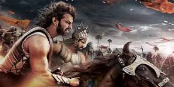
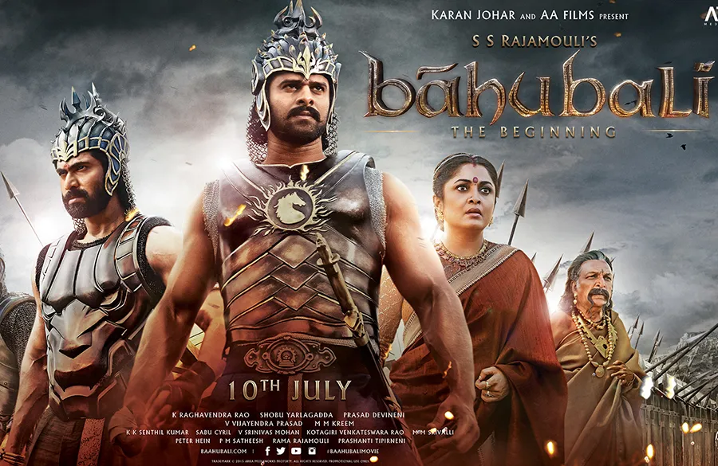
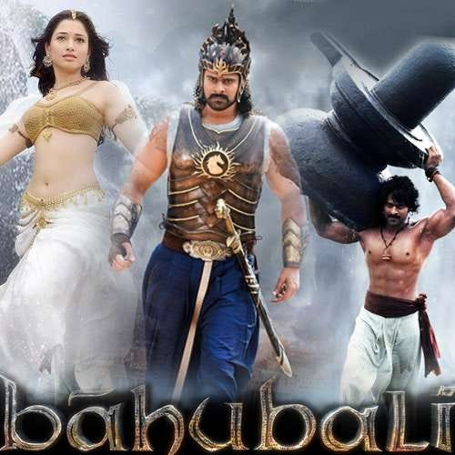

A child from the Mahishmati kingdom is raised by tribal people and one day learns about his royal heritage, his father's bravery in battle and a mission to overthrow the incumbent ruler.
When Sanga and her husband, part of a tribe living around the province of Mahismathi, save a drowning infant, little do they know the background of the infant or what the future holds for him. The kid grows up to as Shivudu, a free-spirit wanting to explore the mountains and in the process learns of his roots and then realizes the whole purpose of his life and ends up confronting the mighty Bhallala Deva!
It's a tale of two cousins in the Kingdom of Mahishmati, India. Balla fights his way with cousin Baahubali for the throne. Young Shivudu grows in the tribes and travels to the distant lands above the waterfalls to fall in love with the beautiful Tamanna, the tribal warrior and helps in her quest to rescue Devasena a prisoner from the claws of King Balla. In this quest he finds out that the legendary King Baahubali is his father and Devasena the prisoner is his mother from the slave commander in chief Katappa of King Balla. Katappa narrates to Shivudu about the legends of his father Baahubali and the epic battle by the brothers Balla and Baahubali against the cruel king who attacks the Mahishmati Kingdom, in this battle Baahubali is crowned as the king by Sivagami as she thinks he is more worthier to the throne. This strengthen Balla's hatred towards his brother king Baahubali.
Baahubali-The Beginning (2015) is essentially about a tribal warrior boy, Shivudu who learns his past and awaits his destiny. The story is set in and around the fictional kingdom of Mahishmati. On the backdrop of a mighty water fall, an old yet regal lady (Sivagami) tries desperately to save a baby from a few attacking soldiers, but dies in the process. A tribal chief and his wife adopt that baby boy as their son. Egged on by curiosity and courage, the boy (Shivudu) makes a daring journey against the wishes of his mother, leaving the valley, towards the waterfall and further north into the nearby mountains. He is simply smitten by a rebel (Avantika) whose cause he willingly he takes up. This is the cause that brings him to Mahishmati Kingdom, and makes him confront his legacy. He saves the trapped and enslaved queen, later revealed to be his true mother (Devasena). He learns about his father, the benevolent and righteous (Amarendra Baahubali), and his ambitious uncle (Bhallaladeva) as told by a loyal warrior slave (Kattappa). And what is the stunning answer Kattappa gives for Shivudu's question as to who killed his father, Amarendra Baahubali?
A fearless man, who grows up in a sheltered tribal village, is driven by extraordinary forces in search of an elusive goal, that leads him on an adventure into completely unfamiliar territory. On this journey, he not only finds love, but uncovers a truth that steers him towards his true destiny.
In the ancient Kingdom of Mahishmati in India, Sivagami (Ramya Krishnan), carrying a baby in her arms, emerges from a cave directly next to a waterfall. She is being chased by soldiers. She kills the soldiers but falls into the river nearby. Knowing that she can't be saved, she makes the ultimate sacrifice, her own life, to save the baby. She holds her hand and the child above water, while she drowns herself. Local villagers spot the stranded child and save the infant while Sivagami dies with her finger pointing to the top of the waterfall. Sanga (Rohini) and her husband name the infant Shivudu and raise him as their own son. To prevent anyone from coming for the baby, they seal the cave with a large rock.
Shivudu (Prabhas) grows up aspiring to climb the waterfall which irks his mother as she does not want to lose her son. He attempts again and again to climb the massive waterfall but fails. Seeing that his son isn't going to stop climbing she asks Swamiji (Tanikella Bharani) for a solution. He tells her that she has to pour water on Shivling 116 times and only then will Lord Shiva answer her prayers. When Shivudu finds out about it, he picks Shivling on his shoulders and puts it below the waterfall. From the top of the falls, a mask falls in to the lap of Shivudu. After pressing the mask into the dirt, he creates an imprint of the person whom the mask belongs to, a beautiful girl. He tries again to climb the waterfall and seeing visions of the girl whom the mask belongs to, succeeds.
On top of the waterfall, Shivudu, now called Shiva, discovers that the mask belongs to Avanthika (Tamannaah), a rebellious warrior whose group has indulged in a guerrilla warfare against king Bhallala Deva / Palvaalthevan (Rana Daggubati) of Mahishmati Kingdom. The group intends to rescue former queen Devasena (Anushka Shetty) who is the real mother of Shiva and she has been imprisoned by the king for the past 25 years.
While Avanthika initially doubts Shiva's intentions, later she falls in love with him after she finds out that he has climbed the waterfall for her. Shiva pledges to help her in her mission and sneaks into Mahishmati to rescue Devasena. Meanwhile, the king's Royal Guard Kattappa (Sathyaraj), known for his warrior abilities, is making arrangements to erect a large statue of the King. During the celebrations, Shiva infiltrates the boundaries of the Mahismati kingdom. During the erection of the statue, some workers slip & the statue is about to fall, when Shiva steps in and stops the statue from falling all by himself, before rallying the men & erecting the statue correctly. The villagers recognize Shiva as Bahubali & chant his name, which worries Bhallala as no-one has spoken the Bahubali name in his kingdom for 25 yrs.
Impressed by Katappa's skills, a warrior (Sudeep) from a Kingdom in the Eastern region, offers his friendship to Kattappa (this scene takes place earlier). On the other hand, Kattappa and his group, attack Shiva upon the order of the King. After Shiva beheads Bhadra (Bhallala Deva's son), Kattappa drops his weapons on realizing that Shiva is Mahendra Baahubali, the son of late king Amarendra Baahubali. Shiva's adoptive family travel through the cave to join the others and witness his ascension.
A flashback reveals the animosity between cousins Amarendra Baahubali and Bhallala Deva / Palvaalthevan, whose father is Bijjala Deva / Pingaladevan (Nassar). They are both trained in all areas including warfare but both of them have different approach towards kingship. Amarendra Baahubali is liberal to everyone and loves his public and so the public love him but Bhallala Deva has tendency to achieve his goals with any means possible. When a war is waged by another Kingdom, they both are guided by Shivagami that whoever brings the head of the enemy Ruler will be rewarded as the New King.
Sivagami is Bijjala's wife & became the caretaker of the kingdom when Amarendra's father & Bijjala's younger brother died in a freak accident. Amarendra's mom died in childbirth. Bijjala saw this as an opportunity to wrest the kingdom for his son, but Sivagami decided to treat both sons equally & let fate decide the future king of Mahismati kingdom.
While Amarendra Baahubali uses his skill, cunning and ability to crush the enemy by motivating his troops against the stronger Army, on the other side Bhallala Deva uses all the resources of the Army, killing innocent people as well as the enemy, to win the war. In the end, when Baahubali is on the verge of killing the Enemy Chief, Bhallala Deva kills the Enemy Chief with his ranged weapon, thus taking all the credit of winning the war.
But Shivagami, who is wise, announces Amarendra Baahubali as the new king because of his nobility and leadership in the war. Kattappa and the others worship him as the king. After the flashback, when Shiva asks Kattappa who killed his father, Kattappa reveals himself as the killer.
|  |  | |
 |